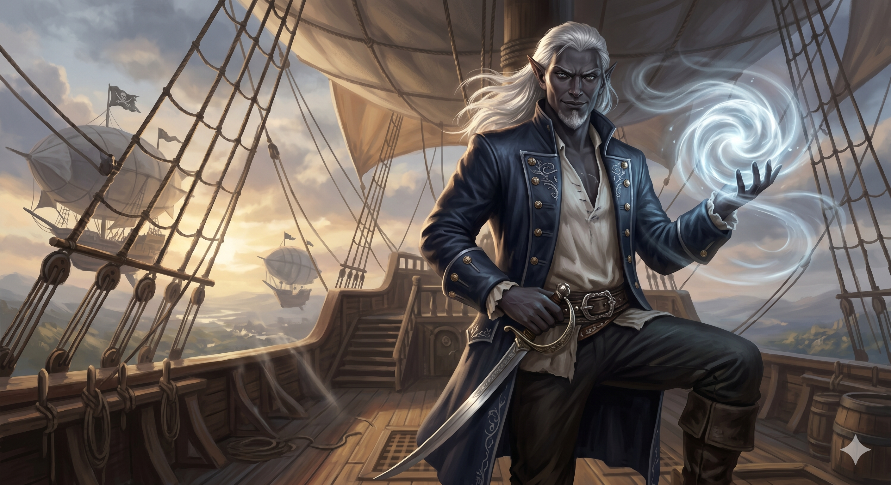

Appears in: Couch Potato Chaos, Couch Potato Crisis
Profile

-
Appears in: Couch Potato Chaos, Couch Potato Crisis
-
Aliases: Captain Noálin, K’her, King of the Pirates
-
Cross-book continuity: Appears in both books.
-
Class: Pirate (with thief-class abilities in his non-orb toolkit)
-
Race: Dark elf
-
Personality: K’her is a rogue shaped by decades of piracy into someone who wears moral bankruptcy as comfortably as his captain’s coat. He is blunt, pragmatic, and darkly charismatic — the kind of person who announces that he sold his conscience years ago and expects you to admire the price. His speech carries a pirate dialect (the “ye” and “be” of a man who has played the role so long it became genuine), and his humor runs toward the dry and self-deprecating. Beneath the bravado sits a dark-elven pride that never fully extinguished: he resents being anyone’s tool, and when Murderjoy’s partnership curdles into subordination, that pride becomes the fuse for his eventual betrayal. K’her is not a good person — he led the slave raid that destroyed the elven city-state of Adreála — but he is capable of loyalty when it is earned rather than extracted. His relationship with [General Kegan](./character-general-kegan.html) in Crisis reveals the man beneath the pirate captain: chaotic pragmatism meets disciplined strategy, and K’her proves he can work within a chain of command when the cause matters. His offer to join the rescue of [Princess Kiwi](./character-princess-kiwistafel-questgiver.html) — delivered with a grin and a pirate’s boast (“Kidnappin’ princesses be me specialty”) — marks the moment his arc turns from villain toward redemption, though the shadow of Adreála ensures that redemption is earned rather than assumed.
-
Backstory: K’her rose to become the self-styled King of the Pirates, commanding a fleet of dirigibles that dominated Etheria’s skies from his stronghold on Wombat Island. As a dark elf in a world where racial hierarchies shape power, he built his kingdom outside those systems — a pirate lord answerable to no throne. At some point he claimed the Orb of Air, one of the four elemental orbs, which granted him mastery over wind and weather that made his already formidable fleet virtually untouchable. His partnership with Queen Murderjoy of Zhakara was purely transactional: his fleet conducted slave raids on elven settlements, supplying her industrial-scale sacrifice machine with the captives she needed to farm XP through mass murder at save points. The raid on Adreála — an entire elven city-state destroyed to feed Murderjoy’s levelling — was the most notorious operation of this alliance. K’her does not pretend to innocence; his own assessment is that if he ever had a conscience, he sold it long ago. By the time of Chaos, the arrangement had become a source of private resentment. Murderjoy treated the pirate king less as a partner and more as a subcontractor, and K’her’s dark-elven pride chafed under the condescension. After Tasha’s party defeated him and stripped him of the Orb of Air in Chapter 30 of Chaos, he lost both his greatest weapon and the leverage that made him relevant to Zhakaran strategy — leaving him with a fleet, a grudge, and no particular reason to stay loyal to the queen who had always treated him as disposable.
-
Significant story events:
- Pre-story — Rise of the Pirate King: K’her builds his pirate fleet, claims the Orb of Air, and establishes dominance over Etheria’s skies from Wombat Island. He enters into a contractual partnership with Queen Murderjoy, supplying slave raids that feed her XP-farming sacrifice machine.
- Adreála slave raid (backstory): K’her leads the pirate fleet in the destruction of the elven city-state of Adreála, capturing its population for Zhakaran slavery. This raid becomes the most infamous example of the Zhakaran war economy’s brutality.
- Chapter 21 — The Queen and the Pirate (Chaos): K’her meets with Murderjoy to discuss their slave-raiding partnership. He listens as she bluntly explains the mass blood sacrifice behind her impossible level. When she presses him on moral objections, he dismisses them: “If I ever had a conscience, I’d have sold it many years ago.” The chapter establishes their transactional relationship and hints at the tensions beneath it.
- Chapter 30 — Knight of Ghosts and Shadows (Chaos): Tasha’s party confronts K’her and defeats him in combat. Tasha uses Steal and Stat Shuffle to strip the Orb of Air from the pirate king — the artifact that made him and his fleet virtually invincible. This is the end of K’her’s relevance as a Chaos antagonist and the beginning of his fall from power.
- Chapter 31 — Scheming Schemers and the Schemes They Scheme (Chaos): K’her’s geopolitical role continues to ripple through the scheming surrounding the orbs and Zhakaran ambitions, even as he has been personally neutralised.
- The Secret of Wombat Island (Crisis): Tasha’s party travels to the pirate-controlled island base to seek out K’her and negotiate his cooperation in the rescue of [Princess Kiwi](./character-princess-kiwistafel-questgiver.html). This is where the pragmatic alliance takes shape: Tasha’s party offers to return the Orb of Air in exchange for K’her’s fleet, his ship the Dea Latis, and his personal commitment to the rescue campaign. [General Kegan](./character-general-kegan.html) is also present, forming the military-pirate alliance that will drive the Zhakaran campaign.
- The Pirate and the General (Crisis): The chapter centred on the dynamic between K’her and [General Kegan](./character-general-kegan.html) — two commanders with vastly different backgrounds who must cooperate against a common enemy. K’her’s chaotic pragmatism clashes with Kegan’s disciplined calculation, but they find common ground in their shared opposition to Murderjoy. K’her accepts the mission with characteristic swagger: “Why did ye not know? Kidnappin’ princesses be me specialty. I accept.”
- Dea Latis / Into Zhakara (Crisis): K’her’s ship, the Dea Latis — now functioning as an airship — becomes the rescue party’s primary transport. K’her provides the naval and aerial expertise that enables the penetration of Zhakaran territory. His knowledge of Zhakaran defences, honed during years of running slave raids, becomes an intelligence asset turned against his former allies.
- Assault on Ironfall (Crisis): K’her’s pirates fight alongside [General Kegan](./character-general-kegan.html)'s forces and Tasha’s party in the largest conventional military operation of the Crisis arc — the assault on the Zhakaran city of Ironfall. The coordination between pirate fleet and military command proves effective.
- Chapter 30 — The End of Zhakara (Crisis): The climactic battle. Tasha’s group assaults Murderjoy’s war camp. The Orb of Life is used to break the charm on Kiwi. In the chaos, Captain K’her — the former contractual partner who supplied Murderjoy’s slave raids — kills the Queen of Zhakara himself. His personal grudge and dark-elven pride converge in the act that ends her reign and collapses the kingdom they once served together.
- Epilogue (Crisis): K’her’s arc concludes with the Crisis. Having shifted from defeated pirate to indispensable rescuer to the man who personally ended Murderjoy’s tyranny, he stands as the series’ clearest example of earned redemption — though the shadow of Adreála and the thousands of enslaved elves his fleet delivered ensure that redemption remains complicated and incomplete.
-
Notable Quotes:
“If I ever had a conscience, I’d have sold it many years ago.” — Chapter 21, The Queen and the Pirate (Chaos). K’her sums up his moral bankruptcy while discussing slave raids with Murderjoy, establishing the self-aware ruthlessness that defines his Chaos persona.
“Why did ye not know? Kidnappin’ princesses be me specialty. I accept.” — The Pirate and the General (Crisis). K’her immediately embraces Tasha’s offer to join the rescue, delivering the boast with a pirate’s grin. The line marks the turn from villain to ally — rescuing a princess from the woman who treated him as a subcontractor.
[A third notable quote from K’her is attributed to chapters The Secret of Wombat Island or Into Zhakara but is not individually recorded in the wiki’s Notable Quotes section. His dialogue during the negotiations at Wombat Island and the pirate-general dynamic would be the most likely source. This would need to be sourced directly from the book text.]
-
Relationships:
- [Queen [Aralynn Murderjoy](./character-queen-aralynn-murderjoy.html)](./character-queen-aralynn-murderjoy.html) (former ally / target of vengeance): The defining political relationship of K’her’s career. Their partnership was transactional — his fleet supplied her slave raids — but it curdled as Murderjoy treated the King of the Pirates less as a partner and more as a subcontractor. His dark-elven pride chafed under the condescension, and by Crisis the resentment has become a personal grudge. K’her ultimately kills Murderjoy himself during the final battle — the former ally turned executioner.
- [General Kegan](./character-general-kegan.html) (uneasy ally / counterpart): The subject of the chapter “The Pirate and the General.” Kegan’s disciplined calculation and K’her’s chaotic pragmatism create both tension and complementary effectiveness. Two commanders from opposite worlds who find common cause against Murderjoy, their partnership becomes one of the more unlikely but functional alliances in the Crisis arc.
- [Tasha Singleton](./character-tasha-singleton.html) (former enemy turned essential ally): The party member who personally stripped the Orb of Air from K’her in Chaos becomes the person who returns it in exchange for his cooperation in Crisis. Their relationship shifts from combat opponents to pragmatic allies united by shared enmity toward Murderjoy.
- Princess Kiwistafel Questgiver (rescue target): The princess he once helped kidnap through slave raids becomes the person he risks everything to rescue. The irony is not lost on him — “Kidnappin’ princesses be me specialty” — and the reversal is central to his redemption arc.
- His pirate fleet / crew (subordinates): The force that made him King of the Pirates. Their loyalty to him persists even after the loss of the Orb of Air, and they fight alongside him throughout the Zhakaran campaign.
- The city-state of Adreála (victims): The elven city K’her’s fleet destroyed in a slave raid. The thousands of elves captured and delivered to Murderjoy’s sacrifice machine represent the moral weight he carries — and the complication that prevents his redemption arc from being clean.
- [Prince Hermes](./character-prince-hermes.html), Ari, Pan, [Sir Slimon](./character-sir-slimon.html) (fellow rescue party members): Allies during the Crisis campaign, united by the common goal of rescuing Kiwi and destroying Zhakara.
-
References: Couch Potato Chaos: Chapter 21 - The Queen and the Pirate, Chapter 30 - Knight of Ghosts and Shadows, Chapter 31 - Scheming Schemers and the Schemes They Scheme | Couch Potato Crisis: Assault on Ironfall, Dea Latis, Epilogue, Into Zhakara, The End of Zhakara, The Pirate and the General, The Secret of Wombat Island